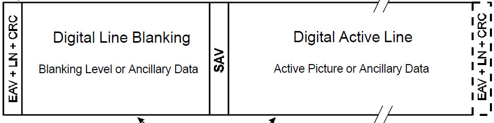

SMPTE274M (для HD-SDI)
Особенности
Модуль кодера формата SMPTE274 для интерфейса SMPTE292M 1920 на 1080, частота 30 кадров. Формат субдискретзации 4:2:2. EAV, LN, CRC, BLANKING, SAV формируются автоматически.

Внешние требования
Reset, En активируются HIGHT уровнем, тактирование 74.25 MHz.
Порты ввода
i_CLK_74m25— меандр 74.25 MHz. Скорость строго регламентирована стандартом SMPTE292M.i_RST— сброс (для сброса подать HIGHT)i_EN— разрешить работу (для разрешения подать HIGHT)i_data_Y— 10 бит яркостной Y компоненты изображения.i_data_C— 10 бит Cb или Cr являются синей и красной цветоразностными компонентами изображения
Порты вывода
PIX_CNT_o— счетчик пикселов, 0-2199.LINE_CNT_o— счетчик строк, 0-1124.VSYNC_o— вертикальная развертка. LOW когда идет изображение (Picture)HSYNC_o— горизонтальная развертка. LOW когда идет изображение (Picture)DATA_RQ_o— сигнализирует об области изображения, HIGHT когда область Picture.Y_data_o— 10 биное слово согласно протоколу Y компоненты.C_data_o— 10 биное слово согласно протоколу C компоненты (Cr / Cb).
Скорость данных линий Y_data_o/ C_data_o повторяет скорость тактирования CLK_74m25.
Результат data_o
Гененрирует данные формата ниже: 
Television horizontal line data
Вставка CRC
Расчет CRC осущевтвляется через модуль crcSMPTE.v, сгенерированный на сайте. Полином x^18 + x^5 + x^4 + 1
Ресурсы
Vivado
| LUT as Logic | Register as Flip Flop |
|---|---|
| 154 | 118 |